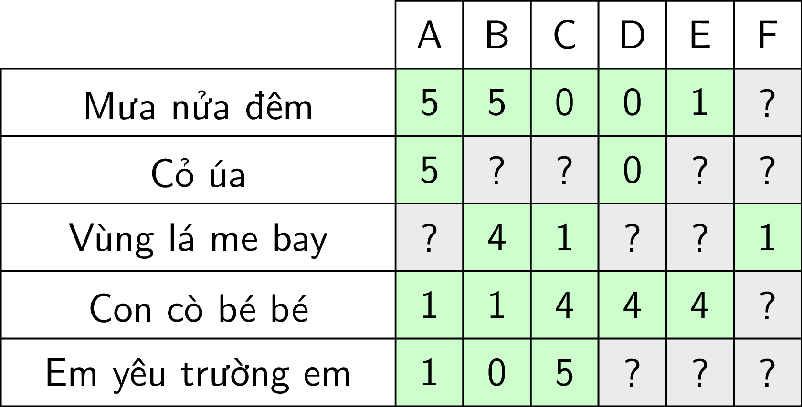

Trong trang này:
-
- Giới thiệu
- 1.1. Hiện tượng Long Tail trong thương mại
- 1.2. Hai nhóm chính của Recommendation Systems
- Giới thiệu
-
- Utility matrix
- 2.1. Ví dụ về Utility matrix
- 2.2. Xây dựng Utility Matrix
- Utility matrix
-
- Content-Based Recommendations
- 3.1. Item profiles
- 3.2. Xây dựng hàm mất mát
- 3.3. Ví dụ về hàm mất mát cho user E
- Content-Based Recommendations
-
- Bài toán với cơ sở dữ liệu MovieLens 100k
- 4.1. Cơ sở dữ liệu MovieLens 100k
- 4.2. Xây dựng item profiles
- 4.3. Tìm mô hình cho mỗi user
- 4.4. Đánh giá mô hình
- Bài toán với cơ sở dữ liệu MovieLens 100k
-
- Thảo luận
-
- Tài liệu tham khảo
1. Giới thiệu
Các bạn có lẽ đã gặp những hiện tượng này nhiều lần:
-
Youtube tự động chuyển các clip liên quan đến clip bạn đang xem. Youtube cũng tự gợi ý những clip mà có thể bạn sẽ thích.
-
Khi bạn mua một món hàng trên Amazon, hệ thống sẽ tự động gợi ý “Frequently bought together”, hoặc nó biết bạn có thể thích món hàng nào dựa trên lịch sử mua hàng của bạn.
-
Facebook hiển thị quảng cáo những sản phẩm có liên quan đến từ khoá bạn vừa tìm kiếm.
-
Facebook gợi ý kết bạn.
-
Netflix tự động gợi ý phim cho người dùng.
Và rất nhiều ví dụ khác mà hệ thống có khả năng tự động gợi ý cho ngừời dùng những sản phẩm họ có thể thích. Bằng cách quảng cáo hướng đúng đội tượng như thế này, hiệu quả của việc marketing cũng sẽ tăng lên. Những thuật toán đằng sau những ứng dụng này là những thuật toán Machine Learning có tên gọi chung là Recommender Systems hoặc Recommendation Systems, tức Hệ thống gợi ý.
Recommendation Systems là một mảng khá rộng của Machine Learning và có tuổi đời ít hơn so với Classification vì internet mới chỉ thực sự bùng nổ khoảng 10-15 năm đổ lại đây. Có hai thực thể chính trong Recommendation Systems là users và items. Users là người dùng. Items là sản phẩm, ví dụ như các bộ phim, bài hát, cuốn sách, clip, hoặc cũng có thể là các users khác trong bài toán gợi ý kết bạn. Mục đích chính của các Recommender Systems là dự đoán mức độ quan tâm của một user tới một item nào đó, qua đó có chiến lược recommend phù hợp.
1.1. Hiện tượng Long Tail trong thương mại
Chúng ta cùng đi vào việc so sánh điểm khác nhau căn bản giữa các cửa hàng thực và cửa hàng điện tử, xét trên khía cạnh lựa chọn sản phẩm để quảng bá.
Có thể các bạn đã biết tới Nguyên lý Pareto (hay quy tắc 20/80): phần lớn kết quả được gây ra bởi phẩn nhỏ nguyên nhân. Phần lớn số từ sử dụng hàng ngày chỉ là một phần nhỏ số từ trong bộ từ điển. Phần lớn của cải được sở hữu bởi phần nhỏ số người. Khi làm thương mại cũng vậy, những sản phẩm bán chạy nhất chỉ chiếm phần nhỏ tổng số sản phẩm.
Các cửa hàng thực thường có hai khu vực, một là khu trưng bày, hai là kho. Nguyên tắc dễ thấy để đạt doanh thu cao là trưng ra các sản phẩm phổ biến nhất ở những nơi dễ nhìn thấy và những sản phẩm ít phổ biến hơn được cất trong kho. Cách làm này có một hạn chế rõ rệt: những sản phẩm được trưng ra mang tính phổ biến chứ chưa chắc đã phù hợp với một khách hàng cụ thể. Một cửa hàng có thể có món hàng một khách hàng tìm kiếm nhưng có thể không bán được vì khách hàng không nhìn thấy sản phẩm đó trên giá; việc này dẫn đến việc khách hàng không tiếp cận được sản phẩm ngay cả khi chúng đã được trưng ra. Ngoài ra, vì không gian có hạn, cửa hàng không thể trưng ra tất cả các sản phẩm mà mỗi loại chỉ đưa ra một số lượng nhỏ. Ở đây, phần lớn doanh thu (80%) đến từ phần nhỏ số sản phẩm phổ biến nhất (20%). Nếu sắp xếp các sản phẩm của cửa hàng theo doanh số từ cao đến thấp, ta sẽ nhận thấy có thể phần nhỏ các sản phẩm tạo ra phần lớn doanh số; và một danh sách dài phía sau chỉ tạo ra một lượng nhỏ đóng góp. Hiện tượng này còn được gọi là long tail phenomenon, tức phần đuôi dài của những sản phẩm ít phổ biến.
Với các cửa hàng online, nhược điểm trên hoàn toàn có thể tránh được. Vì gian trưng bày của các cửa hàng online gần như là vô tận, mọi sản phẩm đều có thể được trưng ra. Hơn nữa, việc sắp xếp online là linh hoạt, tiện lợi với chi phí chuyển đổi gần như bằng 0 khiến việc mang đúng sản phẩm tới khách hàng trở nên thuận tiện hơn. Doanh thu, vì thế có thể được tăng lên.
(Ở đây, chúng ta tạm quên đi khía cạnh có cảm giác thật chạm vào sản phẩm của các cửa hàng thực. Hãy cùng tập trung vào phần làm thế nào để quảng bá đúng sản phẩm tới đúng khách hàng)
1.2. Hai nhóm chính của Recommendation Systems
Các Recommendation Systems thường được chia thành hai nhóm lớn:
-
Content-based systems: đánh giá đặc tính của items được recommended. Ví dụ: một user xem rất nhiều các bộ phim về cảnh sát hình sự, vậy thì gơi ý một bộ phim trong cơ sở dữ liệu có chung đặc tính hình sự tới user này, ví dụ phim Người phán xử. Cách tiếp cận này yêu cầu việc sắp xếp các items vào từng nhóm hoặc đi tìm các đặc trưng của từng item. Tuy nhiên, có những items không có nhóm cụ thể và việc xác định nhóm hoặc đặc trưng của từng item đôi khi là bất khả thi.
-
Collaborative filtering: hệ thống gợi ý items dựa trên sự tương quan (similarity) giữa các users và/hoặc items. Có thể hiểu rằng ở nhóm này một item được recommended tới một user dựa trên những users có hành vi tương tự. Ví dụ: users A, B, C đều thích các bài hát của Noo Phước Thịnh. Ngoài ra, hệ thống biết rằng users B, C cũng thích các bài hát của Bích Phương nhưng chưa có thông tin về việc liệu user A có thích Bích Phương hay không. Dựa trên thông tin của những users tương tự là B và C, hệ thống có thể dự đoán rằng A cũng thích Bích Phương và gợi ý các bài hát của ca sĩ này tới A.
Trong bài viết này, chúng ta sẽ làm quen với nhóm thứ nhất: Content-based systems. Tôi sẽ nói về Collaborative filtering trong bài viết tiếp theo.
2. Utility matrix
2.1. Ví dụ về Utility matrix
Như đã đề cập, có hai thực thể chính trong các Recommendation Systems là users và items. Mỗi user sẽ có mức độ quan tâm (degree of preference) tới từng item khác nhau. Mức độ quan tâm này, nếu đã biết trước, được gán cho một giá trị ứng với mỗi cặp user-item. Giả sử rằng mức độ quan tâm được đo bằng giá trị user rate cho item, ta tạm gọi giá trị này là rating. Tập hợp tất cả các ratings, bao gồm cả những giá trị chưa biết cần được dự đoán, tạo nên một ma trận gọi là utility matrix. Xét ví dụ sau:
|  | Hình 1: Ví dụ về utility matrix với hệ thống Gợi ý bài hát. Các bài hát được người dùng đánh giá theo mức độ từ 0 đến 5 sao. Các dấu '?' nền màu xám ứng với việc dữ liệu chưa tồn tại trong cơ sở dữ liệu. Recommendation Systems cần phải tự điền các giá trị này. |
Trong ví dụ này, có 6 users A, B, C, D, E, F và 5 bài hát. Các ô màu xanh thể hiện việc một user đã đánh giá một bài hát với ratings từ 0 (không thích) đến 5 (rất thích). Các ô có dấu ‘?’ màu xám tương ứng với các ô chưa có dữ liệu. Công việc của một Recommendation Systems là dự đoán giá trị tại các ô màu xám này, từ đó đưa ra gợi ý cho người dùng. Recommendation Systems, vì vậy, đôi khi cũng được coi là bài toán Matrix Completion (Hoàn thiện ma trận).
Trong ví dụ đơn giản này, dễ thấy có 2 thể loại nhạc khác nhau: 3 bài đầu là nhạc Bolero và 2 bài sau là nhạc Thiếu nhi. Từ dữ liệu này, ta cũng có thể đoán được rằng A, B thích thể loại Bolero; C, D, E, F thích thể loại Thiếu nhi. Từ đó, một hệ thống tốt nên gợi ý Cỏ úa cho B; Vùng lá me bay cho A,; Em yêu trường em cho D, E, F. Giả sử chỉ có hai thể loại nhạc này, khi có một bài hát mới, ta chỉ cần phân lớp nó vào thể loại nào, từ đó đưa ra gợi ý với từng người dùng.
Thông thường, có rất nhiều users và items trong hệ thống, và mỗi user thường chỉ rate một số lượng rất nhỏ các item, thậm chí có những user không rate item nào (với những users này thì cách tốt nhất là gợi ý các items phổ biến nhất). Vì vậy, lượng ô màu xám của utility matrix trong các bài toán đó thường là rất lớn, và lượng các ô đã được điền là một số rất nhỏ.
Rõ ràng rằng càng nhiều ô được điền thì độ chính xác của hệ thống sẽ càng được cải thiện. Vì vậy, các hệ thống luôn luôn hỏi người dùng về sự quan tâm của họ tới sản phẩm, và muốn người dùng đánh giá càng nhiều sản phẩm càng tốt. Việc đánh giá các sản phẩm, vì thế, không những giúp các người dùng khác biết được chất lượng sản phẩm mà còn giúp hệ thống biết được sở thích của người dùng, qua đó có chính sách quảng cáo hợp lý.
2.2. Xây dựng Utility Matrix
Không có Utility matrix, gần như không thể gợi ý được sản phẩm tới ngừời dùng, ngoài cách luôn luôn gợi ý các sản phẩm phổ biến nhất. Vì vậy, trong các Recommender Systems, việc xây dựng Utility Matrix là tối quan trọng. Tuy nhiên, việc xây dựng ma trận này thường có gặp nhiều khó khăn. Có hai hướng tiếp cận phổ biến để xác định giá trị rating cho mỗi cặp user-item trong Utility Matrix:
-
Nhờ người dùng rate sản phẩm. Amazon luôn nhờ người dùng rate các sản phẩm của họ bằng cách gửi các email nhắc nhở nhiều lần. Rất nhiều hệ thống khác cũng làm việc tương tự. Tuy nhiên, cách tiếp cận này có một vài hạn chế, vì thường thì người dùng ít khi rate sản phẩm. Và nếu có, đó có thể là những đánh giá thiên lệch bởi những người sẵn sàng rate.
-
Hướng tiếp cận thứ hai là dựa trên hành vi của users. Rõ ràng, nếu một người dùng mua một sản phẩm trên Amazon, xem một clip trên Youtube (có thể là nhiều lần), hay đọc một bài báo, thì có thể khẳng định rằng ngừời dùng đó thích sản phẩm đó. Facebook cũng dựa trên việc bạn like những nội dung nào để hiển thị newsfeed của bạn những nội dung liên quan. Bạn càng đam mê facebook, facebook càng được hưởng lợi, thế nên nó luôn mang tới bạn những thông tin mà khả năng cao là bạn muốn đọc. (Đừng đánh giá xã hội qua facebook). Thường thì với cách này, ta chỉ xây dựng được một ma trận với các thành phần là
1và0, với1thể hiện người dùng thích sản phẩm,0thể hiện chưa có thông tin. Trong trường hợp này,0không có nghĩa là thấp hơn1, nó chỉ có nghĩa là ngừời dùng chưa cung cấp thông tin. Chúng ta cũng có thể xây dựng ma trận với các giá trị cao hơn 1 thông qua thời gian hoặc số lượt mà người dùng xem một sản phẩm nào đó. Đôi khi, nút dislike cũng mang lại những lợi ích nhất định cho hệ thống, lúc này có thể gán giá trị tương ứng bằng-1chẳng hạn.
3. Content-Based Recommendations
3.1. Item profiles
Trong các hệ thống content-based, tức dựa trên nội dung của mỗi item, chúng ta cần xây dựng một bộ hộ sơ (profile) cho mỗi item. Profile này được biểu diễn dưới dạng toán học là một feature vector. Trong những trường hợp đơn giản, feature vector được trực tiếp trích xuất từ item. Ví dụ, xem xét các features của một bài hát mà có thể được sử dụng trong các Recommendation Systems:
- Ca sĩ. Cùng là bài Thành phố buồn nhưng có người thích bản của Đan Nguyên, có người lại thích bản của Đàm Vĩnh Hưng.
- Nhạc sĩ sáng tác. Cùng là nhạc trẻ nhưng có người thích Phan Mạnh Quỳnh, người khác lại thích MTP.
- Năm sáng tác. Một số người thích nhạc xưa cũ hơn nhạc hiện đại.
- Thể loại. Điều này thì chắc rồi, Quan họ và Bolero sẽ có thể thu hút những nhóm người khác nhau.
Có rất nhiều yếu tố khác của một bài hát có thể được sử dụng. Ngoại trừ Thể loại khó định nghĩa, các yếu tố khác đều được xác định rõ ràng.
Trong ví dụ ở Hình 1 phía trên, chúng ta đơn giản hoá bài toán bằng việc xây dựng một feature vector hai chiều cho mỗi bài hát: chiều thứ nhất là mức độ Bolero, chiều thứ hai là mức độ Thiếu nhi của bài đó. Đặt các feature vector cho mỗi bài hát là \(\mathbf{x}_1, \mathbf{x}_2, \mathbf{x}_3, \mathbf{x}_4, \mathbf{x}_5\). Giả sử các feature vector (ở dạng hàng) cho mỗi bài hát được cho trong Hình 2 dưới đây:
Bài toán đi tìm mô hình \(\theta_i\) cho mỗi user có thể được coi là một bài toán Regression trong trường hợp ratings là một dải giá trị, hoặc bài toán Classification trong trường hợp ratings là một vài trường hợp cụ thể, như like/dislike chẳng hạn. Dữ liệu training để xây dựng mỗi mô hình \(\theta_i\) là các cặp (item profile, ratings) tương ứng với các items mà user đó đã rated. Việc điền các giá trị còn thiếu trong ma trận Utility chính là việc dự đoán đầu ra cho các unrated items khi áp dụng mô hình \(\theta_i\) lên chúng.
Việc lựa chọn mô hình Regression/Classification nào tuỳ thuộc vào ứng dụng. Tôi sẽ lấy ví dụ về một mô hình đơn giản nhất: mô hình tuyến tính, mà cụ thể là Linear Regression với regularization, tức Ridge Regression.
3.2. Xây dựng hàm mất mát
Giả sử rằng số users là \(N\), số items là \(M\), utility maxtrix được mô tả bởi ma trận \(\mathbf{Y}\). Thành phần ở hàng thứ \(m\), cột thứ \(n\) của \(\mathbf{Y}\) là mức độ quan tâm (ở đây là số sao đã rate) của user thứ \(n\) lên sản phẩm thứ \(m\) mà hệ thống đã thu thập được. Ma trận \(\mathbf{Y}\) bị khuyết rất nhiều thành phần tương ứng với các giá trị mà hệ thống cần dự đoán. Thêm nữa, gọi \(\mathbf{R}\) là ma trận rated or not thể hiện việc một user đã rated một item hay chưa. Cụ thể, \(r_{ij}\) bằng 1 nếu item thứ \(i\) đã được rated bởi user thứ \(j\), bằng 0 trong trường hợp ngược lại.
Mô hình tuyến tính:
Giả sử rằng ta có thể tìm được một mô hình cho mỗi user, minh hoạ bởi vector cột hệ số \(\mathbf{w}_i\) và bias \(b_n\) sao cho mức độ quan tâm của một user tới một item có thể tính được bằng một hàm tuyến tính:
\[ y_{mn} = \mathbf{x}_m \mathbf{w}_n + b_n ~~~~(1) \]
(Chú ý rằng \(\mathbf{x}_m\) là một vector hàng, \(\mathbf{w}_n\) là một vector cột.)
Xét một user thứ \(n\) bất kỳ, nếu ta coi training set là tập hợp các thành phần đã được điền của \(\mathbf{y}_n\), ta có thể xây dựng hàm mất mát tương tự như Ridge Regression như sau:
\[ \mathcal{L}_n = \frac{1}{2} \sum_{m~:~ r_{mn} = 1}(\mathbf{x}_m \mathbf{w}_n + b_n - y_{mn})^2 + \frac{\lambda}{2} ||\mathbf{w}_n||_2^2 \]
Trong đó, thành phần thứ hai là regularization term và \(\lambda\) là một tham số dương. Chú ý rằng regularization thường không được áp dụng lên bias \(b_n\). Trong thực hành, trung bình cộng của lỗi thường được dùng, và mất mát \(\mathcal{L}_n\) được viết lại thành:
\[ \mathcal{L}_n = \frac{1}{2s_n} \sum_{m~:~ r_{mn} = 1}(\mathbf{x}_m \mathbf{w}_n + b_n - y_{mn})^2 + \frac{\lambda}{2s_n} ||\mathbf{w}_n||_2^2 \]
Trong đó \(s_n\) là số lượng các items mà user thứ \(n\) đã rated. Nói cách khác: \[ s_n = \sum_{m=1}^M r_{mn}, \] là tổng các phần tử trên cột thứ \(n\) của ma trận rated or not \(\mathbf{R}\).
Các bạn đã thấy loss function này quen chưa?
Vì biểu thức loss function chỉ phụ thuộc vào các items đã được rated, ta có thể rút gọn nó bằng cách đặt \(\hat{\mathbf{y}}_n\) là sub vector của \(\mathbf{y}\) được xây dựng bằng cách trích các thành phần khác dấu ? ở cột thứ \(n\), tức đã được rated bởi user thứ \(n\) trong Utility Matrix \(\mathbf{Y}\). Đồng thời, đặt \(\hat{\mathbf{X}}_n\) là sub matrix của ma trận feature \(\mathbf{X}\), được tạo bằng cách trích các hàng tương ứng với các items đã được rated bởi user thứ \(n\). (Xem ví dụ phía dưới để hiểu rõ hơn). Khi đó, biểu thức hàm mất mát của mô hình cho user thứ \(n\) được viết gọn thành:
\[ \mathcal{L}_n = \frac{1}{2s_n} ||\hat{\mathbf{X}}_n\mathbf{w}_n + b_n \mathbf{e}_n- \hat{\mathbf{y}}_n||_2^2 + \frac{\lambda}{2s_n} ||\mathbf{w}_n||_2^2 \] trong đó, \(\mathbf{e}_n\) là vector cột chứa \(s_n\) phần tử 1.
Đây chính xác là hàm mất mát của Ridge Regression. Cặp nghiệm \(\mathbf{w}_n, b_n\) có thể được tìm qua Stochastic Gradient Descent (SGD), hoặc Mini-batch GD. Tôi không đi sâu vào việc tính đạo hàm theo \(\mathbf{w}_n\) và \(b_n\) của \(\mathcal{L}_n\) nữa. Việc này đã được đề cập nhiều trong các bài trước. Trong bài này, tôi sẽ sử dụng class Ridge trong sklearn.linear_model.
Nếu vẫn có điểm chưa hiểu, bạn đọc có thể xem ví dụ nhỏ dưới đây:
3.3. Ví dụ về hàm mất mát cho user E
Quay trở lại với ví dụ trong hình 2, feature matrix cho các items (mỗi hàng tương ứng với một item) là:
\[
\mathbf{X} =
\left[
\begin{matrix}
0.99 & 0.02 \
0.91 & 0.11 \
0.95 & 0.05 \
0.01 & 0.99 \
0.03 & 0.98
\end{matrix}
\right]
\]
Xét trường hợp của user E với \(n = 5\), \(\mathbf{y}_5 = [1, ?, ?, 4, ?]^T \Rightarrow \mathbf{r}_5 = [1, 0, 0, 1, 0]^T\). Vì E mới chỉ rated cho items thứ nhất và thứ tư nên \(s_5 = 2\). Hơn nữa:
\[
\hat{\mathbf{X}}_5 =
\left[
\begin{matrix}
0.99 & 0.02 \
0.01 & 0.99
\end{matrix}
\right],
\hat{\mathbf{y}}_5 = \left[
\begin{matrix}
1 \
4
\end{matrix}
\right], ~
\mathbf{e}_5 = \left[
\begin{matrix}
1 \
1
\end{matrix}
\right]
\]
Khi đó, hàm mất mát cho hệ số tương ứng với user E là:
\[
\mathcal{L}_5 = \frac{1}{4} ||\left[
\begin{matrix}
0.99 & 0.02 \
0.01 & 0.99
\end{matrix}
\right]\mathbf{w}_5 + b_5\left[
\begin{matrix}
1 \
1
\end{matrix}
\right] -
\left[
\begin{matrix}
1 \
4
\end{matrix}
\right]||_2^2 + \frac{\lambda}{4} ||\mathbf{w}_5||_2^2
\]
Chúng ta sẽ áp dụng những phân tích trên đây để đi tìm nghiệm cho một bài toán gần với thực tế dưới đây.
4. Bài toán với cơ sở dữ liệu MovieLens 100k
4.1. Cơ sở dữ liệu MovieLens 100k
Bộ cơ sở dữ liệu MovieLens 100k được công bố năm 1998 bởi GroupLens. Bộ cơ sở dữ liệu này bao gồm 100,000 (100k) ratings từ 943 users cho 1682 bộ phim. Các bạn cũng có thể tìm thấy các bộ cơ sở dữ liệu tương tự với khoảng 1M, 10M, 20M ratings. Trong bài viết này, tôi sử dụng bộ cơ sở dữ liệu nhỏ nhất này nhằm mục đích minh hoạ.
Sau khi download và giải nén, chúng ta sẽ thu được rất nhiều các file nhỏ, chúng ta chỉ cần quan tâm các file sau:
-
u.data: Chứa toàn bộ các ratings của 943 users cho 1682 movies. Mỗi user rate ít nhất 20 movies. Thông tin về thời gian rate cũng được cho nhưng chúng ta không sử dụng trong bài viết này. -
ua.base, ua.test, ub.base, ub.test: là hai cách chia toàn bộ dữ liệu ra thành hai tập con, một cho training, một cho test. Chúng ta sẽ thực hành trênua.basevàua.test. Bạn đọc có thể thử với cách chia dữ liệu còn lại. -
u.user: Chứa thông tin về users, bao gồm: id, tuổi, giới tính, nghề nghiệp, zipcode (vùng miền), vì những thông tin này cũng có thể ảnh hưởng tới sở thích của các users. Tuy nhiên, trong bài viết này, chúng ta sẽ không sử dụng các thông tin này, trừ thông tin về id để xác định các user khác nhau. -
u.genre: Chứa tên của 19 thể loại phim. Các thể loại bao gồm:unknown, Action, Adventure, Animation, Children's, Comedy, Crime, Documentary, Drama, Fantasy, Film-Noir, Horror, Musical, Mystery, Romance, Sci-Fi, Thriller, War, Western, -
u.item: thông tin về mỗi bộ phim. Một vài dòng đầu tiên của file:1|Toy Story (1995)|01-Jan-1995||http://us.imdb.com/M/title-exact?Toy%20Story%20(1995)|0|0|0|1|1|1|0|0|0|0|0|0|0|0|0|0|0|0|0 2|GoldenEye (1995)|01-Jan-1995||http://us.imdb.com/M/title-exact?GoldenEye%20(1995)|0|1|1|0|0|0|0|0|0|0|0|0|0|0|0|0|1|0|0 3|Four Rooms (1995)|01-Jan-1995||http://us.imdb.com/M/title-exact?Four%20Rooms%20(1995)|0|0|0|0|0|0|0|0|0|0|0|0|0|0|0|0|1|0|0 4|Get Shorty (1995)|01-Jan-1995||http://us.imdb.com/M/title-exact?Get%20Shorty%20(1995)|0|1|0|0|0|1|0|0|1|0|0|0|0|0|0|0|0|0|0Trong mỗi dòng, chúng ta sẽ thấy id của phim, tên phim, ngày phát hành, link trên imdb, và các số nhị phân
0,1phía cuối để chỉ ra bộ phim thuộc các thể loại nào trong 19 thể loại đã cho trongu.genre. Một bộ phim có thể thuộc nhiều thể loại khác nhau. Thông tin về thể loại này sẽ được dùng để xây dựng item profiles.
Với cơ sở dữ liệu này, chúng ta sẽ sử dụng thư viện pandas để trích xuất dữ liệu, có thể được cài đặt bằng pip install pandas.
import pandas as pd
#Reading user file:
u_cols = ['user_id', 'age', 'sex', 'occupation', 'zip_code']
users = pd.read_csv('ml-100k/u.user', sep='|', names=u_cols,
encoding='latin-1')
n_users = users.shape[0]
print 'Number of users:', n_users
# users.head() #uncomment this to see some few examples
Number of users: 943
#Reading ratings file:
r_cols = ['user_id', 'movie_id', 'rating', 'unix_timestamp']
ratings_base = pd.read_csv('ml-100k/ua.base', sep='\t', names=r_cols, encoding='latin-1')
ratings_test = pd.read_csv('ml-100k/ua.test', sep='\t', names=r_cols, encoding='latin-1')
rate_train = ratings_base.as_matrix()
rate_test = ratings_test.as_matrix()
print 'Number of traing rates:', rate_train.shape[0]
print 'Number of test rates:', rate_test.shape[0]
Number of traing rates: 90570
Number of test rates: 9430
4.2. Xây dựng item profiles
Công việc quan trọng trong content-based recommendation system là xây dựng profile cho mỗi item, tức feature vector cho mỗi item. Trước hết, chúng ta cần load toàn bộ thông tin về các items vào biến items:
#Reading items file:
i_cols = ['movie id', 'movie title' ,'release date','video release date', 'IMDb URL', 'unknown', 'Action', 'Adventure',
'Animation', 'Children\'s', 'Comedy', 'Crime', 'Documentary', 'Drama', 'Fantasy',
'Film-Noir', 'Horror', 'Musical', 'Mystery', 'Romance', 'Sci-Fi', 'Thriller', 'War', 'Western']
items = pd.read_csv('ml-100k/u.item', sep='|', names=i_cols,
encoding='latin-1')
n_items = items.shape[0]
print 'Number of items:', n_items
Number of items: 1682
Vì ta đang dựa trên thể loại của phim để xây dựng profile, ta sẽ chỉ quan tâm tới 19 giá trị nhị phân ở cuối mỗi hàng:
X0 = items.as_matrix()
X_train_counts = X0[:, -19:]
Tiếp theo, chúng ta sẽ xây dựng feature vector cho mỗi item dựa trên ma trận thể loại phim và feature TF-IDF. Tôi sẽ mô tả kỹ hơn về TF-IDF trong một bài viết khác. Tạm thời, chúng ta sử dụng thư viện sklearn.
#tfidf
from sklearn.feature_extraction.text import TfidfTransformer
transformer = TfidfTransformer(smooth_idf=True, norm ='l2')
tfidf = transformer.fit_transform(X_train_counts.tolist()).toarray()
Sau bước này, mỗi hàng của tfidf tương ứng với feature vector của một bộ phim.
Tiếp theo, với mỗi user, chúng ta cần đi tìm những bộ phim nào mà user đó đã rated, và giá trị của các rating đó.
import numpy as np
def get_items_rated_by_user(rate_matrix, user_id):
"""
in each line of rate_matrix, we have infor: user_id, item_id, rating (scores), time_stamp
we care about the first three values
return (item_ids, scores) rated by user user_id
"""
y = rate_matrix[:,0] # all users
# item indices rated by user_id
# we need to +1 to user_id since in the rate_matrix, id starts from 1
# while index in python starts from 0
ids = np.where(y == user_id +1)[0]
item_ids = rate_matrix[ids, 1] - 1 # index starts from 0
scores = rate_matrix[ids, 2]
return (item_ids, scores)
4.3. Tìm mô hình cho mỗi user
Bây giờ, ta có thể đi tìm các hệ số của Ridge Regression cho mỗi user:
from sklearn.linear_model import Ridge
from sklearn import linear_model
d = tfidf.shape[1] # data dimension
W = np.zeros((d, n_users))
b = np.zeros((1, n_users))
for n in range(n_users):
ids, scores = get_items_rated_by_user(rate_train, n)
clf = Ridge(alpha=0.01, fit_intercept = True)
Xhat = tfidf[ids, :]
clf.fit(Xhat, scores)
W[:, n] = clf.coef_
b[0, n] = clf.intercept_
Sau khi tính được các hệ số W và b, ratings cho mỗi items được dự đoán bằng cách tính:
# predicted scores
Yhat = tfidf.dot(W) + b
Dưới đây là một ví dụ với user có id là 10.
n = 10
np.set_printoptions(precision=2) # 2 digits after .
ids, scores = get_items_rated_by_user(rate_test, n)
Yhat[n, ids]
print('Rated movies ids :', ids )
print('True ratings :', scores)
print('Predicted ratings:', Yhat[ids, n])
Rated movies ids: [ 37 109 110 226 424 557 722 724 731 739]
True ratings: [3 3 4 3 4 3 5 3 3 4]
Predicted ratings: [3.18 3.13 3.42 3.09 3.35 5.2 4.01 3.35 3.42 3.72]
4.4. Đánh giá mô hình
Để đánh giá mô hình tìm được, chúng ta sẽ sử dụng Root Mean Squared Error (RMSE), tức căn bậc hai của trung bình cộng bình phương của lỗi. Lỗi được tính là hiệu của true rating và predicted rating:
def evaluate(Yhat, rates, W, b):
se = 0
cnt = 0
for n in xrange(n_users):
ids, scores_truth = get_items_rated_by_user(rates, n)
scores_pred = Yhat[ids, n]
e = scores_truth - scores_pred
se += (e*e).sum(axis = 0)
cnt += e.size
return sqrt(se/cnt)
print 'RMSE for training:', evaluate(Yhat, rate_train, W, b)
print 'RMSE for test :', evaluate(Yhat, rate_test, W, b)
RMSE for training: 0.908980456283
RMSE for test : 1.27032827004
Như vậy, với tập training, sai số vào khoảng 0.9 sao; với tập test, sai số lớn hơn một chút, rơi vào khoảng 1.3. Chúng ta thấy rằng kết quả này chưa thực sự tốt vì chúng ta đã đơn giản hoá mô hình đi quá nhiều. Kết quả tốt hơn có thể được thấy trong bài tiếp theo: Collaborative Filtering.
5. Thảo luận
-
Content-based Recommendation Systems là phương pháp đơn giản nhất trong các hệ thống Recommendation Systems. Đặc điểm của phương pháp này là việc xây dựng mô hình cho mỗi user không phụ thuộc vào các users khác.
-
Việc xây dựng mô hình cho mỗi users có thể được coi như bài toán Regression hoặc Classsification với training data là cặp dữ liệu (item profile, rating) mà user đó đã rated. item profile không phụ thuộc vào user, nó thường phụ thuộc vào các đặc điểm mô tả của item hoặc cũng có thể được xác định bằng cách yêu cầu người dùng gắn tag.
6. Tài liệu tham khảo
[1] Recommendation Systems - Stanford InfoLab
[2] Recommendation systems - Machine Learning - Andrew Ng